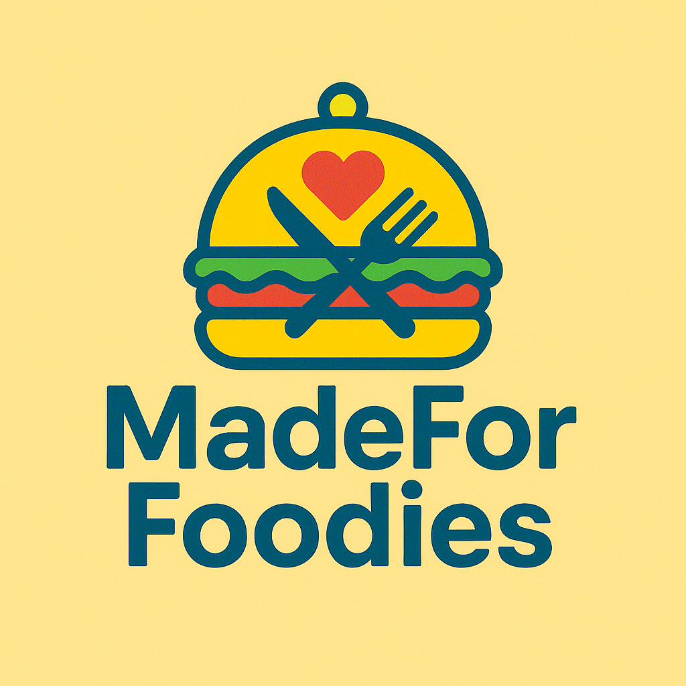

Inicio
Quienes Somos & Que Ofrecemos
Contacto
MadeForFoodies
Soluciones digitales únicas para foodies que quieren destacar online.
CONSIGUE TU WEB AHORA
Contacto
Puedes contactarnos para consultas y pedidos vía:
@made4foodies
mforfoodies@gmail.com